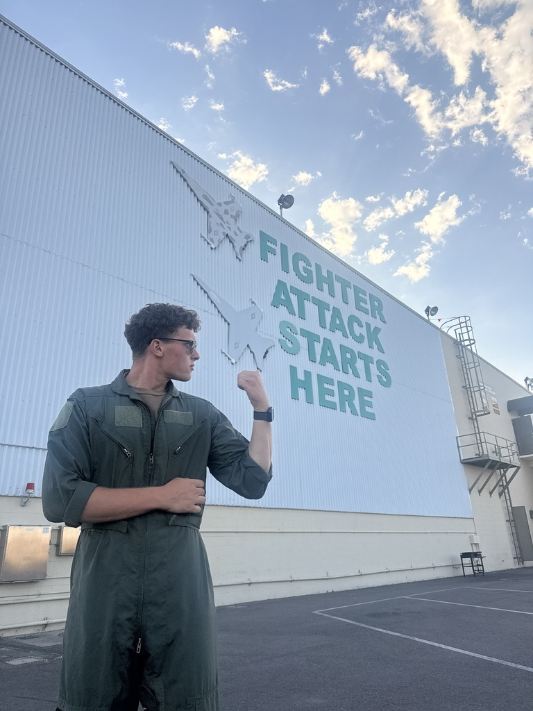
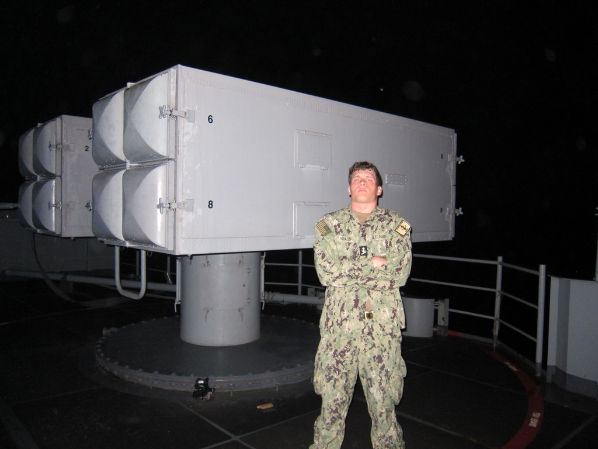

I am Dorian Braun, as it says at the top of the page. I am a sophomore at St. Edward's University here in Austin, Texas. I was born and raised in Ramstein, Germany, one of the largest American military installations in Europe, and also home to one of the largest American populations outside of the United States. Because I lived in a military environment, I was exposed to a unique culture and way of life that has shaped me into the person I am today, thus, I want to serve my country and hopefully become a Marine Corps Aviator. In terms of programming interests, I will be completely honest when I say that I have no interest in computer programming. It's personally not for me, but I do love the physical aspects of computer programming. I once had a business in high school where I would "flip" computers. I would buy computer parts for cheap, assemble them into fully running computers, and sell them for profit. This gave me a grasp of computer science, and although I do not care for it too much, I do find it interesting, and I am enjoying my time in college with Computer Science as my major.
Check out the University of Texas at Austin Naval ROTC Page! You might just see me in there somewhere!
